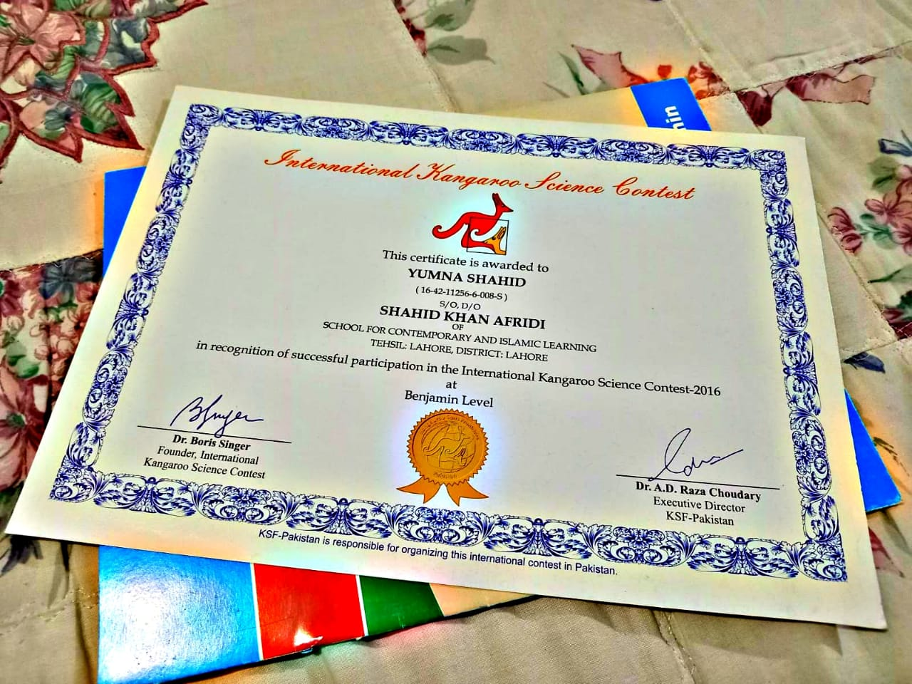
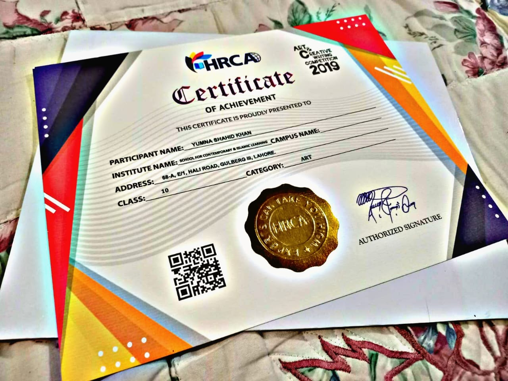
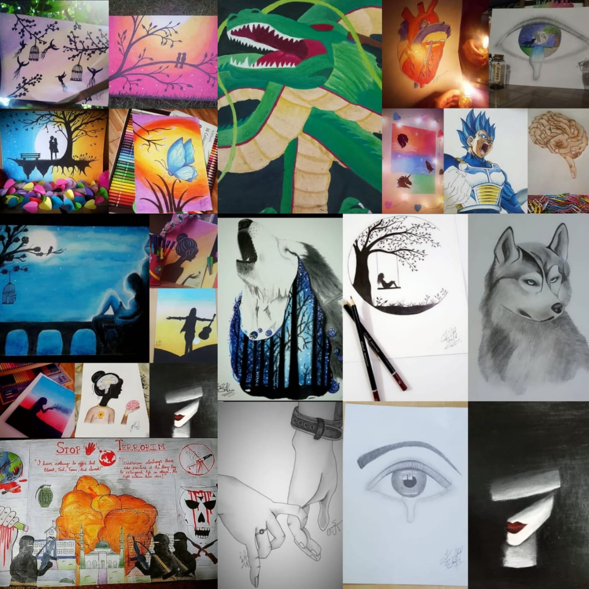
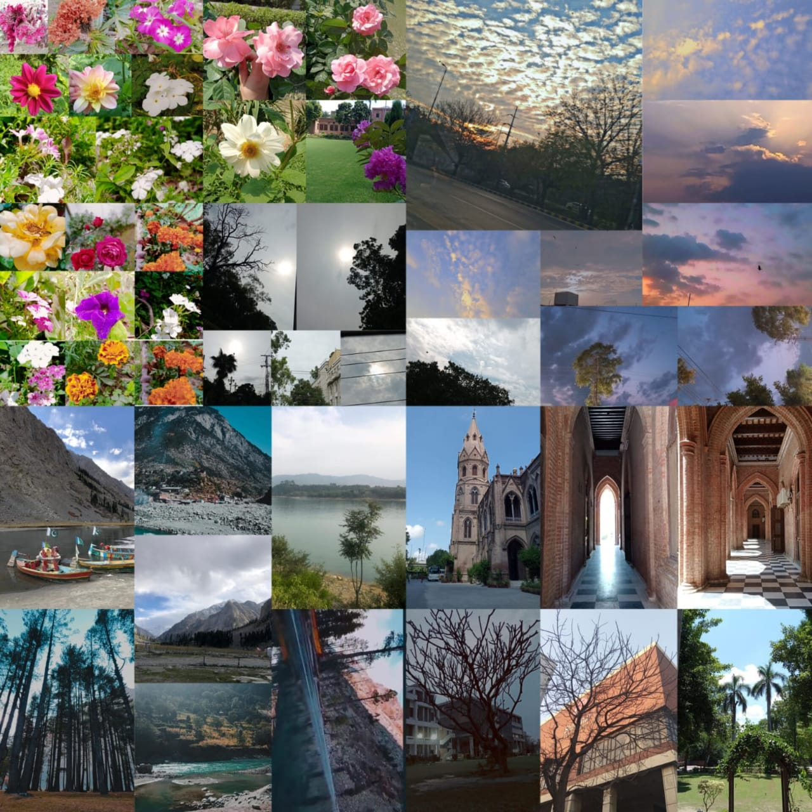
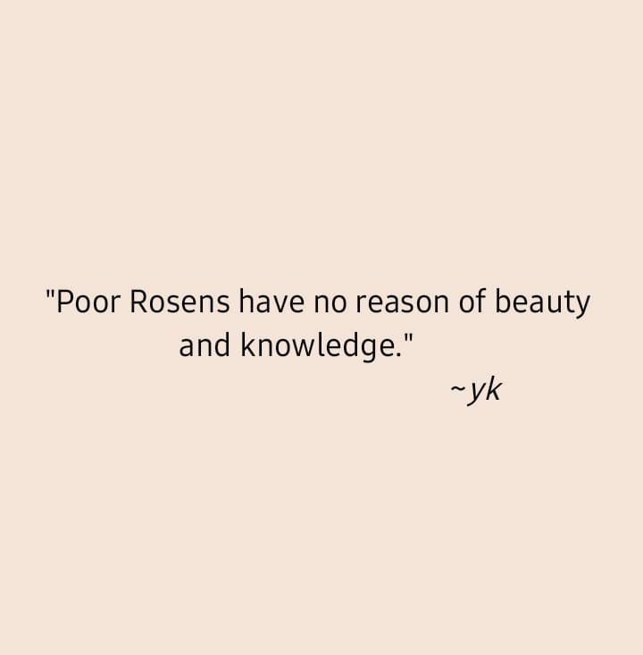
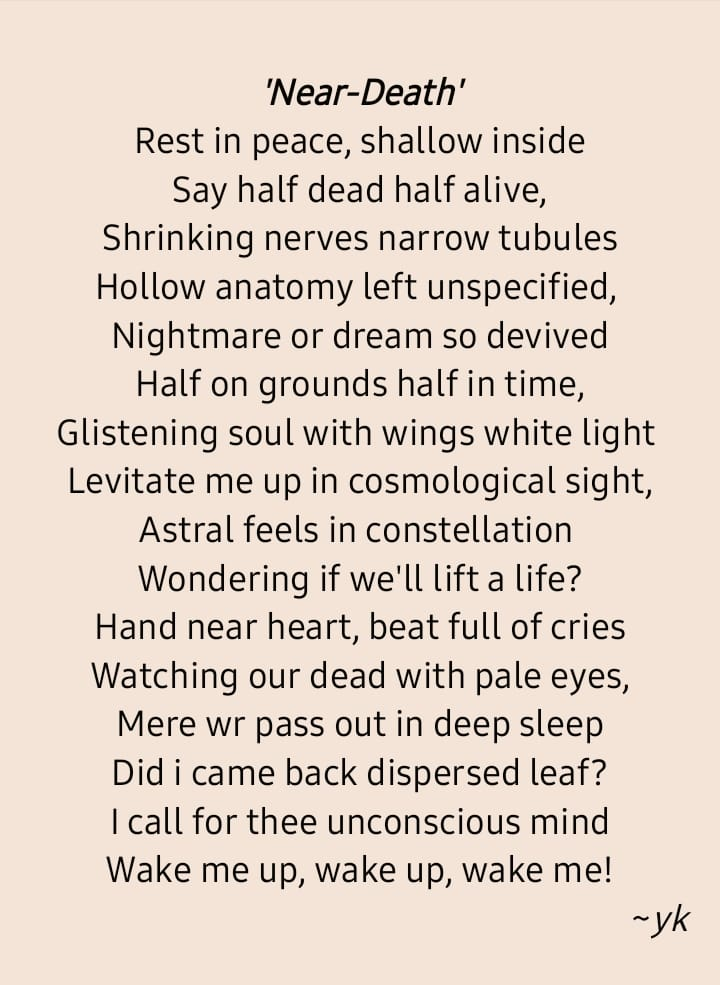
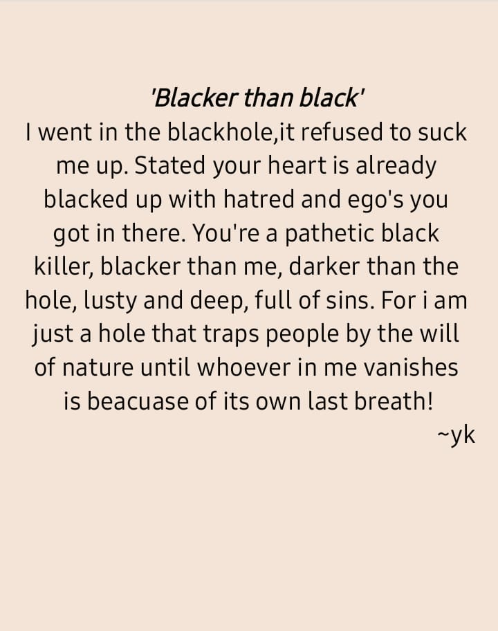

Hi! I'm Yumna
🚀 This is my portfolio.
She's unfolding the path of her own mystery, to know who she was who she is! ~ Yk
📜 Introduction
My name is Yumna Shahid. I am currently studying medicine (1st year) at Shalamar Medical Dental College, Lahore. I did my junior, elementary and secondary(matric) education from SCIL- School for Contemporary and Islamic Learning. I did my higher secondary education (Fsc-premedical) from Punjab Group of College(campus-10). I have always been keen about medical study thus due to my endless passion and a heartiest desire I choose medicine and Alhamdulillah by the grace of Lord I accomplished my goal. Moreover, I'm quite passionate, enthusiastic and determined. Additionally, leadership has always been a part of mine. Conclusively, there is no such thing as I can't in my dictionary, losing is not in my veins and giving up was never a choice for me. So, yes I'll keep unfolding my journey to come and lead myself till i reach higher level of wisdom and success!
👩🏽🚀 Achievements
I have always been determined on the path in achieving my goal. I have been a bright student in my School days. I was good in academic curriculum as well as co-curricular activities. I always wanted to pursue the things I had interest in. So, I have stood academic positions along with winning the curricular activities competitions. I have 14 shields/ trophies, 28 certificates and 2 gold, 1 bronze medal in sports. I have also participated in International Kangroo science contest and in HRCA mega events. Well, talking about my college days, there were no co-curricular activities or competitions on which I was really sad about. If there had been any, of course, I would've participated but sadly there weren't. So, yes college life was the boring 2 years for me. Now, I'm in university and started a new journey studying medicine. Looking forward to blast 5 years. These are some of the highlights.


🎨 Creative Elements
I'm proud that I'm creative and multi-talented by the grace of God.
🖌️ Sketching
I love to draw. Sketching is one of my favourite hobbies since childhood. I want to paint the whole world with my colourful palette. Not only painting but I also do paper crafting. Some highlights:
 Visit my insta art page.
Visit my insta art page.📷 Photography
I am a nature admirer. I'm a deep selenophile. I get captivated by the charm of clouds and sky. This is from where I started to develop interest in photography. I always captured the mesmerising scene of nature's beauty in my eyes but I also wanted to capture those moments in my camera as a memoir. Some highlights:
✍️ Writing
I am also good at writings, poetry, proses and qoutes. I loved to write about my emotions and feelings, so I used to write diaries but by the time I was 15 I started to write poems and qoutes summarising the deep essence of my emotions and expressing through the pen. Up until now, I never stop writing.
I have my own small booklet of poetry with 100+ qoutes and 20+ poems and some prose writings.
One of my favourite quotes is,

One of my favourite poems is,

One of my favourite writings is,

My other hobbies that are also my talents are cooking, stitching, videography and editing.
Lastly, I am well organised and managed and that is the reason how I managed to carry out my co-curricular activities as well as my hobbies alongside my academic curriculum. Studying for knowledge is essential for us but we should'nt forget mental and physical health.
Thanks for watching!